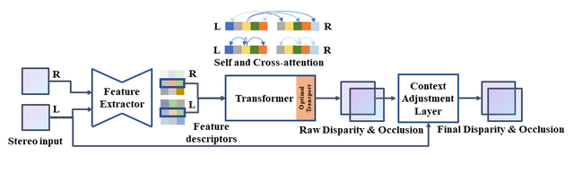

We have open-sourced our work "Revisiting Stereo Depth Estimation From a Sequence-to-Sequence Perspective with Transformers". You can find the code on github at link https://github.com/mli0603/stereo-transformer.
Stereo depth estimation relies on optimal correspondence matching between pixels on epipolar lines in the left and right image to infer depth. Rather than matching individual pixels, in this work, we revisit the problem from a sequence-to-sequence correspondence perspective to replace cost volume construction with dense pixel matching using position information and attention. This approach, named STereo TRansformer (STTR), has several advantages: It 1) relaxes the limitation of a fixed disparity range, 2) identifies occluded regions and provides confidence of estimation, and 3) imposes uniqueness constraints during the matching process. We report promising results on both synthetic and real-world datasets and demonstrate that STTR generalizes well across different domains, even without fine-tuning.
 Network overview.